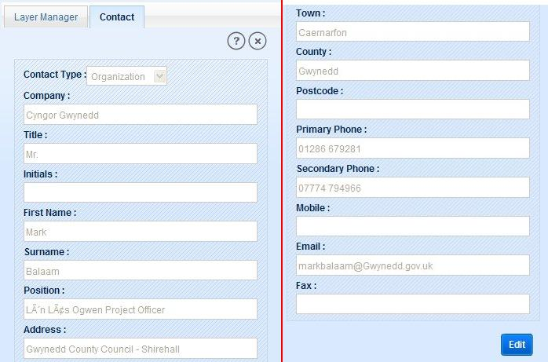
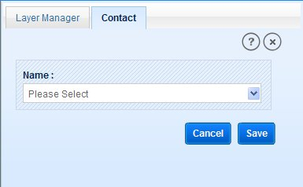

Contacts module is all about the contact details of Landowners, Organization, Supplier and Contractors responsible for SNPA PRoW features. This module facilitates users with following functionalities:
View Contact Details
Add New Contact
Add Existing Contact
Delete Contact
This functionality allows user to view the details of Contractor/Supplier/Organization/Landowner related to a selected feature. To view contact details:
Select a SNPA feature (Path/Furniture/Surface/Access Land/Issue).
Click on ‘Detailed Info’ tool from result panel.
Click on Link tool of feature (Path Links/Furniture Links/Surface Links/Access Land Links/ Issue Links/Job Links) from the detailed information of feature.
Application opens a new tab window according to type of feature (Path Links/Furniture Links/Surface Links/Access Land Links/ Issue Links/Job Links).
Go to Contact accordion, application displays all the list of related contacts in tabular format (if exists).
Click on Contact ID of a record, application displays the contact details on left panel in Contact tab.

Fig.1 Contacts Details
This functionality allows user to add a new contact to selected feature. To add new contact follow the below steps:
On Contact accordion of feature link tab, click on ‘Add New Contact’ button.
Application displays Contact form in left panel.
Select Contact Type and enter all the contact details.
After filling all the information, click on ‘Save’ button.
Contact details are saved to server and application displays message “Data Successfully Saved”.
This functionality allows user to add contact details to selected feature from the records available in SNPA database. To add an existing contact:
On Contact accordion of feature link tab, click on ‘Add Existing Contact’ button.
Application displays Contact form with a drop-down box Name and two buttons ‘Cancel’ and ‘Save’.

Fig.2 Adding Existing Contact
Select name from the available list of contacts.
Application displays all details of selected person.
Click on ‘Save’ button, application displays message “Data Successfully Saved”.
Click on ‘Cancel’ button, application closes the tab without adding the contact.
Delete functionality allows user to remove a contact details associated with selected feature. In Path Links/Furniture Links/Surface Links/Access Land Links/ Issue Links/Job Links under Contact accordion if any contact details exist, user can remove this contact details by following steps below:
Click on Delete icon in Action column of record.
Application displays a confirmation message to remove contact details.
Click Ok, application displays another message of successful deletion.
Click Cancel to discard the delete process.